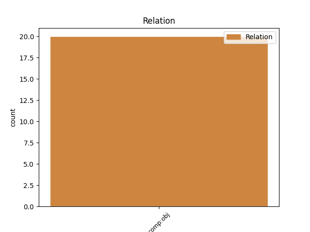
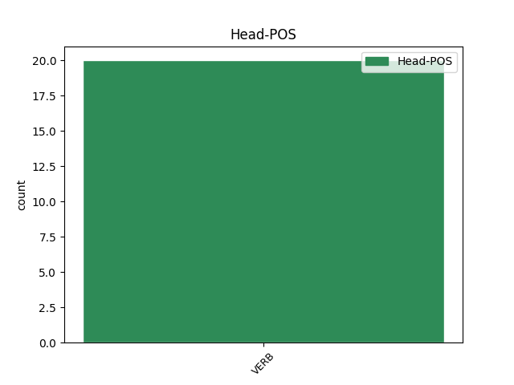
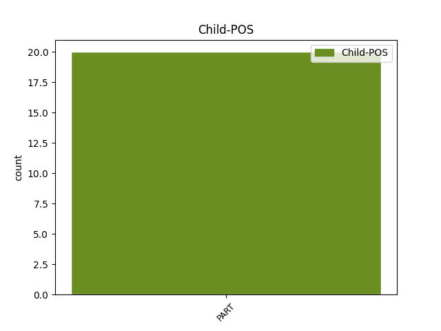

Distribution of features within this leaf



Agreement Rules sorted by frequency.
- When the dependent token is the direct object complements(comp:obj) of the head token, and the head token is VERB and the dependent token is PART.
1 I _ _ _ _ 0 _ _ _
2 mí _ _ _ _ 0 _ _ _
3 Mheán _ _ _ _ 0 _ _ _
4 Fómhair _ _ _ _ 0 _ _ _
5 na _ _ _ _ 0 _ _ _
6 bliana _ _ _ _ 0 _ _ _
7 céanna _ _ _ _ 0 _ _ _
8 sin _ _ _ _ 0 _ _ _
9 , _ _ _ _ 0 _ _ _
10 thug _ _ _ _ 0 _ _ _
11 Pól _ _ _ _ 0 _ _ _
12 VI _ _ _ _ 0 _ _ _
13 cuairt _ _ _ _ 0 _ _ _
14 ar _ _ _ _ 0 _ _ _
15 dheoise _ _ _ _ 0 _ _ _
16 Veinéise _ _ _ _ 0 _ _ _
17 agus _ _ _ _ 0 _ _ _
18 baineadh _ _ _ _ 0 _ _ _
19 stangadh _ _ _ _ 0 _ _ _
20 as _ _ _ _ 0 _ _ _
21 an _ _ _ _ 0 _ _ _
22 phatrarc _ _ _ _ 0 _ _ _
23 , _ _ _ _ 0 _ _ _
24 lá _ _ _ _ 0 _ _ _
25 amháin _ _ _ _ 0 _ _ _
26 , _ _ _ _ 0 _ _ _
27 nuair _ _ _ _ 0 _ _ _
28 a _ _ _ _ 0 _ _ _
29 bhain bain VERB VTI Form=Len|Mood=Ind|Tense=Past 0 _ _ _
30 an _ _ _ _ 0 _ _ _
31 pápa _ _ _ _ 0 _ _ _
32 de _ _ _ _ 0 _ _ _
33 a _ _ _ _ 0 _ _ _
34 stoil _ _ _ _ 0 _ _ _
35 gur gur PART Vb PartType=Vb|Tense=Past 29 comp:obj _ _
36 chuir _ _ _ _ 0 _ _ _
37 thart _ _ _ _ 0 _ _ _
38 ar _ _ _ _ 0 _ _ _
39 ghuaillí _ _ _ _ 0 _ _ _
40 Luciani _ _ _ _ 0 _ _ _
41 í _ _ _ _ 0 _ _ _
42 . _ _ _ _ 0 _ _ _
Disagree Examples:
1 Tuigfear tuig VERB VTI Mood=Ind|Tense=Fut|Voice=Auto 0 _ _ _
2 mar _ _ _ _ 0 _ _ _
3 sin _ _ _ _ 0 _ _ _
4 , _ _ _ _ 0 _ _ _
5 de _ _ _ _ 0 _ _ _
6 bharr _ _ _ _ 0 _ _ _
7 tóir _ _ _ _ 0 _ _ _
8 a _ _ _ _ 0 _ _ _
9 bheith _ _ _ _ 0 _ _ _
10 agam _ _ _ _ 0 _ _ _
11 ar _ _ _ _ 0 _ _ _
12 bhealaí _ _ _ _ 0 _ _ _
13 nádúrtha _ _ _ _ 0 _ _ _
14 leis _ _ _ _ 0 _ _ _
15 an _ _ _ _ 0 _ _ _
16 gcorp _ _ _ _ 0 _ _ _
17 a _ _ _ _ 0 _ _ _
18 thabhairt _ _ _ _ 0 _ _ _
19 chun _ _ _ _ 0 _ _ _
20 lánfoirfeachta _ _ _ _ 0 _ _ _
21 gur gur PART Vb PartType=Vb|Tense=Past 1 comp:obj _ _
22 chuireas _ _ _ _ 0 _ _ _
23 cluas _ _ _ _ 0 _ _ _
24 le _ _ _ _ 0 _ _ _
25 héisteacht _ _ _ _ 0 _ _ _
26 orm _ _ _ _ 0 _ _ _
27 féin _ _ _ _ 0 _ _ _
28 san _ _ _ _ 0 _ _ _
29 Horseman's _ _ _ _ 0 _ _ _
30 Inn _ _ _ _ 0 _ _ _
31 i _ _ _ _ 0 _ _ _
32 mBéal _ _ _ _ 0 _ _ _
33 na _ _ _ _ 0 _ _ _
34 Coire _ _ _ _ 0 _ _ _
35 Thoir _ _ _ _ 0 _ _ _
36 nuair _ _ _ _ 0 _ _ _
37 a _ _ _ _ 0 _ _ _
38 thosaigh _ _ _ _ 0 _ _ _
39 na _ _ _ _ 0 _ _ _
40 dúchasaigh _ _ _ _ 0 _ _ _
41 , _ _ _ _ 0 _ _ _
42 ar _ _ _ _ 0 _ _ _
43 cheannaíos _ _ _ _ 0 _ _ _
44 deoch _ _ _ _ 0 _ _ _
45 nó _ _ _ _ 0 _ _ _
46 dhó _ _ _ _ 0 _ _ _
47 dóibh _ _ _ _ 0 _ _ _
48 i _ _ _ _ 0 _ _ _
49 rith _ _ _ _ 0 _ _ _
50 na _ _ _ _ 0 _ _ _
51 hoíche _ _ _ _ 0 _ _ _
52 , _ _ _ _ 0 _ _ _
53 ag _ _ _ _ 0 _ _ _
54 caint _ _ _ _ 0 _ _ _
55 go _ _ _ _ 0 _ _ _
56 leathmhagúil _ _ _ _ 0 _ _ _
57 ar _ _ _ _ 0 _ _ _
58 thuras _ _ _ _ 0 _ _ _
59 leighis _ _ _ _ 0 _ _ _
60 ag _ _ _ _ 0 _ _ _
61 Nettle's _ _ _ _ 0 _ _ _
62 Cottage _ _ _ _ 0 _ _ _
63 . _ _ _ _ 0 _ _ _
1 ' _ _ _ _ 0 _ _ _
2 Gidh _ _ _ _ 0 _ _ _
3 nár nár PART Vb PartType=Cmpl|Polarity=Neg|Tense=Past 24 comp:obj _ _
4 éirigh _ _ _ _ 0 _ _ _
5 leo _ _ _ _ 0 _ _ _
6 an _ _ _ _ 0 _ _ _
7 corn _ _ _ _ 0 _ _ _
8 mór _ _ _ _ 0 _ _ _
9 a _ _ _ _ 0 _ _ _
10 bhíonn _ _ _ _ 0 _ _ _
11 á _ _ _ _ 0 _ _ _
12 lorg _ _ _ _ 0 _ _ _
13 go _ _ _ _ 0 _ _ _
14 crua _ _ _ _ 0 _ _ _
15 ag _ _ _ _ 0 _ _ _
16 achan _ _ _ _ 0 _ _ _
17 chontae _ _ _ _ 0 _ _ _
18 a _ _ _ _ 0 _ _ _
19 sciobadh _ _ _ _ 0 _ _ _
20 leo _ _ _ _ 0 _ _ _
21 sa _ _ _ _ 0 _ _ _
22 tréimhse _ _ _ _ 0 _ _ _
23 sin _ _ _ _ 0 _ _ _
24 dar dar VERB PresInd Mood=Ind|Tense=Pres 0 _ _ _
25 le _ _ _ _ 0 _ _ _
26 Anthony _ _ _ _ 0 _ _ _
27 go _ _ _ _ 0 _ _ _
28 bhfuil _ _ _ _ 0 _ _ _
29 dul _ _ _ _ 0 _ _ _
30 chun _ _ _ _ 0 _ _ _
31 cinn _ _ _ _ 0 _ _ _
32 iontach _ _ _ _ 0 _ _ _
33 déanta _ _ _ _ 0 _ _ _
34 ag _ _ _ _ 0 _ _ _
35 foireann _ _ _ _ 0 _ _ _
36 shinsir _ _ _ _ 0 _ _ _
37 Chill _ _ _ _ 0 _ _ _
38 Dara _ _ _ _ 0 _ _ _
39 le _ _ _ _ 0 _ _ _
40 deich _ _ _ _ 0 _ _ _
41 mbliana _ _ _ _ 0 _ _ _
42 anuas _ _ _ _ 0 _ _ _
43 agus _ _ _ _ 0 _ _ _
44 go _ _ _ _ 0 _ _ _
45 bhfuil _ _ _ _ 0 _ _ _
46 seans _ _ _ _ 0 _ _ _
47 ann _ _ _ _ 0 _ _ _
48 fós _ _ _ _ 0 _ _ _
49 go _ _ _ _ 0 _ _ _
50 gcaithfidh _ _ _ _ 0 _ _ _
51 Sam _ _ _ _ 0 _ _ _
52 an _ _ _ _ 0 _ _ _
53 Geimhreadh _ _ _ _ 0 _ _ _
54 sa _ _ _ _ 0 _ _ _
55 chontae _ _ _ _ 0 _ _ _
56 . _ _ _ _ 0 _ _ _
1 Ach _ _ _ _ 0 _ _ _
2 tá bí VERB VI Mood=Ind|Tense=Pres 0 _ _ _
3 a _ _ _ _ 0 _ _ _
4 fhios _ _ _ _ 0 _ _ _
5 agam _ _ _ _ 0 _ _ _
6 gur gur PART Vb PartType=Vb|Tense=Past 2 comp:obj _ _
7 imigh _ _ _ _ 0 _ _ _
8 mo _ _ _ _ 0 _ _ _
9 mháthair _ _ _ _ 0 _ _ _
10 - _ _ _ _ 0 _ _ _
11 go _ _ _ _ 0 _ _ _
12 ndeachaigh _ _ _ _ 0 _ _ _
13 sí _ _ _ _ 0 _ _ _
14 isteach _ _ _ _ 0 _ _ _
15 sa _ _ _ _ 0 _ _ _
16 Máimín _ _ _ _ 0 _ _ _
17 ag _ _ _ _ 0 _ _ _
18 m' _ _ _ _ 0 _ _ _
19 athair _ _ _ _ 0 _ _ _
20 in _ _ _ _ 0 _ _ _
21 aghaidh _ _ _ _ 0 _ _ _
22 toil _ _ _ _ 0 _ _ _
23 a _ _ _ _ 0 _ _ _
24 muintir _ _ _ _ 0 _ _ _
25 fhéin _ _ _ _ 0 _ _ _
26 agus _ _ _ _ 0 _ _ _
27 ní _ _ _ _ 0 _ _ _
28 raibh _ _ _ _ 0 _ _ _
29 aon _ _ _ _ 0 _ _ _
30 duine _ _ _ _ 0 _ _ _
31 acu _ _ _ _ 0 _ _ _
32 ag _ _ _ _ 0 _ _ _
33 goil _ _ _ _ 0 _ _ _
34 isteach _ _ _ _ 0 _ _ _
35 don _ _ _ _ 0 _ _ _
36 Mháimín _ _ _ _ 0 _ _ _
37 . _ _ _ _ 0 _ _ _
1 Tuigeann tuig VERB VTI Mood=Ind|Tense=Pres 0 _ _ _
2 Nollaig _ _ _ _ 0 _ _ _
3 níos _ _ _ _ 0 _ _ _
4 fearr _ _ _ _ 0 _ _ _
5 anois _ _ _ _ 0 _ _ _
6 cad _ _ _ _ 0 _ _ _
7 ina _ _ _ _ 0 _ _ _
8 thaobh _ _ _ _ 0 _ _ _
9 nach nach PART Vb PartType=Cmpl|Tense=Past 1 comp:obj _ _
10 mbíonn _ _ _ _ 0 _ _ _
11 cead _ _ _ _ 0 _ _ _
12 aige _ _ _ _ 0 _ _ _
13 cairde _ _ _ _ 0 _ _ _
14 a _ _ _ _ 0 _ _ _
15 bheith _ _ _ _ 0 _ _ _
16 sa _ _ _ _ 0 _ _ _
17 tigh _ _ _ _ 0 _ _ _
18 aige _ _ _ _ 0 _ _ _
19 ar _ _ _ _ 0 _ _ _
20 an _ _ _ _ 0 _ _ _
21 Satharn _ _ _ _ 0 _ _ _
22 ; _ _ _ _ 0 _ _ _
23 ní _ _ _ _ 0 _ _ _
24 bheadh _ _ _ _ 0 _ _ _
25 spás _ _ _ _ 0 _ _ _
26 do _ _ _ _ 0 _ _ _
27 spleodar _ _ _ _ 0 _ _ _
28 a _ _ _ _ 0 _ _ _
29 scóipe _ _ _ _ 0 _ _ _
30 i _ _ _ _ 0 _ _ _
31 lar _ _ _ _ 0 _ _ _
32 an _ _ _ _ 0 _ _ _
33 teaghlachais _ _ _ _ 0 _ _ _
34 . _ _ _ _ 0 _ _ _
1 Géilleann géill VERB VTI Mood=Ind|Tense=Pres 0 _ _ _
2 roinnt _ _ _ _ 0 _ _ _
3 daoine _ _ _ _ 0 _ _ _
4 do _ _ _ _ 0 _ _ _
5 thuairim _ _ _ _ 0 _ _ _
6 Malcolm _ _ _ _ 0 _ _ _
7 X _ _ _ _ 0 _ _ _
8 - _ _ _ _ 0 _ _ _
9 gur gur PART Vb PartType=Vb|Tense=Past 1 comp:obj _ _
10 roghnaíodh _ _ _ _ 0 _ _ _
11 na _ _ _ _ 0 _ _ _
12 Seapánaigh _ _ _ _ 0 _ _ _
13 in _ _ _ _ 0 _ _ _
14 ionad _ _ _ _ 0 _ _ _
15 na _ _ _ _ 0 _ _ _
16 nGearmánach _ _ _ _ 0 _ _ _
17 toisc _ _ _ _ 0 _ _ _
18 gur _ _ _ _ 0 _ _ _
19 chine _ _ _ _ 0 _ _ _
20 geal _ _ _ _ 0 _ _ _
21 iad _ _ _ _ 0 _ _ _
22 na _ _ _ _ 0 _ _ _
23 Gearmánaigh _ _ _ _ 0 _ _ _
24 . _ _ _ _ 0 _ _ _